Contents
# Developer's setting
%load_ext autoreload
%autoreload 2
# import gftt
import matplotlib.pyplot as plt
import numpy as np
import pandas as pd
import seaborn as sns
import matplotlib
# font = {'family' : 'normal',
# 'weight' : 'bold',
# 'size' : 22}
font = {'size' : 20}
matplotlib.rc('font', **font)
matplotlib.rc('legend', fontsize=16)
axes_settings = {'linewidth' : 2}
matplotlib.rc('axes', **axes_settings)
df = pd.read_csv('../results_2022.csv', dtype=str)
df = df.replace('varying: multi-pass', 0)
# df.loc[df['Template size (m)'] == 'varying: multi-pass'] = '0'
for field in ['Pixel spacing (m)',
'Template size (m)',
'SAV-uncertainty-x',
'SAV-uncertainty-y',
'SAV-peak-x',
'SAV-peak-y',
'LSR-uncertainty-nm',
'LSR-uncertainty-sh',
'pt0_velodiff',
'pt1_velodiff',
'pt2_velodiff',
'pt0_vxdiff',
'pt0_vydiff',
'pt1_vxdiff',
'pt1_vydiff',
'pt2_vxdiff',
'pt2_vydiff',
'pt0_vxavgdiff',
'pt0_vyavgdiff',
'pt1_vxavgdiff',
'pt1_vyavgdiff',
'pt2_vxavgdiff',
'pt2_vyavgdiff',
'SAV-outlier-percent',
'Invalid-pixel-percent']:
df[field] = df[field].astype(float)
datestrs = ['LS8-20180304-20180405', 'LS8-20180802-20180818', 'Sen2-20180304-20180314', 'Sen2-20180508-20180627']
demo = df
# demo
df['larger_u'] = np.where(df['SAV-uncertainty-x'] > df['SAV-uncertainty-y'], df['SAV-uncertainty-x'], df['SAV-uncertainty-y'])
df['large_vxdiff'] = np.abs(df['pt0_vxdiff']) > df['SAV-uncertainty-x']
df['large_vydiff'] = np.abs(df['pt0_vydiff']) > df['SAV-uncertainty-y']
df['large_vxavgdiff'] = np.abs(df['pt0_vxavgdiff']) > df['SAV-uncertainty-x']
df['large_vyavgdiff'] = np.abs(df['pt0_vyavgdiff']) > df['SAV-uncertainty-y']
df['large_velodiff'] = np.abs(df['pt0_velodiff']) > df['larger_u']
df['large_velomag'] = np.abs(df['pt0_velodiff']) / df['larger_u']
# demo = df.loc[df['Date'] == datestrs[0]]
# demo = df.loc[df['Date'] != datestrs[3]]
demo = df
fig, axs = plt.subplots(1, 2, figsize=(16, 7))
sns.scatterplot(data=demo, x='SAV-uncertainty-x', y='LSR-uncertainty-sh', hue='large_vxdiff', ax=axs[0])
# axs[0].set_ylim(0, 0.02)
sns.scatterplot(data=demo, x='SAV-uncertainty-y', y='LSR-uncertainty-sh', hue='large_vydiff', ax=axs[1])
# axs[1].set_ylim(0, 0.02)
<AxesSubplot:xlabel='SAV-uncertainty-y', ylabel='LSR-uncertainty-sh'>
fig, axs = plt.subplots(1, 2, figsize=(16, 7))
sns.scatterplot(data=demo, x='SAV-uncertainty-x', y='LSR-uncertainty-sh', hue='large_vxavgdiff', ax=axs[0])
# axs[0].set_ylim(0, 0.02)
sns.scatterplot(data=demo, x='SAV-uncertainty-y', y='LSR-uncertainty-sh', hue='large_vyavgdiff', ax=axs[1])
# axs[1].set_ylim(0, 0.02)
<AxesSubplot:xlabel='SAV-uncertainty-y', ylabel='LSR-uncertainty-sh'>
# plt.subplots(figsize=(7, 7))
# sns.scatterplot(data=demo, x='SAV-uncertainty-x', y='LSR-uncertainty-nm', hue='large_vxdiff')
fig, axs = plt.subplots(4, 2, figsize=(16, 32))
for i in range(4):
demo = df.loc[df['Date'] == datestrs[i]]
sns.scatterplot(data=demo, x='SAV-uncertainty-x', y='LSR-uncertainty-sh', hue='large_vxdiff', ax=axs[i, 0])
# axs[0].set_ylim(0, 0.02)
sns.scatterplot(data=demo, x='SAV-uncertainty-y', y='LSR-uncertainty-sh', hue='large_vydiff', ax=axs[i, 1])
# axs[1].set_ylim(0, 0.02)
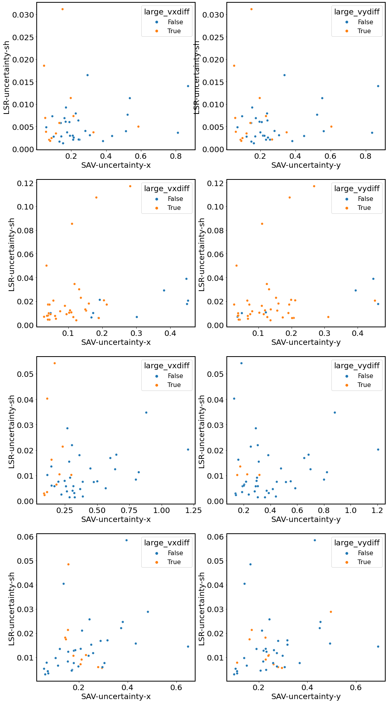
# plt.subplots(figsize=(7, 7))
# sns.scatterplot(data=demo, x='SAV-uncertainty-x', y='LSR-uncertainty-nm', hue='large_vxdiff')
fig, axs = plt.subplots(4, 2, figsize=(16, 32))
for i in range(4):
demo = df.loc[df['Date'] == datestrs[i]]
sns.scatterplot(data=demo, x='SAV-uncertainty-x', y='LSR-uncertainty-sh', hue='large_vxavgdiff', ax=axs[i, 0])
# axs[0].set_ylim(0, 0.02)
sns.scatterplot(data=demo, x='SAV-uncertainty-y', y='LSR-uncertainty-sh', hue='large_vyavgdiff', ax=axs[i, 1])
# axs[1].set_ylim(0, 0.02)
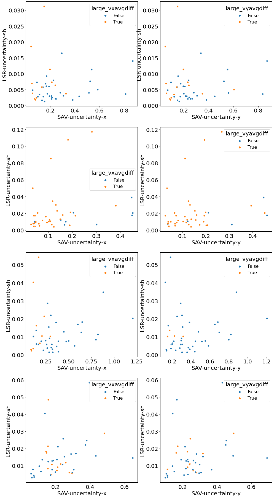
fig, axs = plt.subplots(1, 2, figsize=(16, 7))
sns.scatterplot(data=demo, x='SAV-uncertainty-x', y='pt0_vxdiff', hue='Template size (m)', ax=axs[0])
axs[0].plot([0, 1], [0, 1], color='black')
axs[0].plot([0, 1], [0, -1], color='black')
sns.scatterplot(data=demo, x='SAV-uncertainty-y', y='pt0_vydiff', hue='Template size (m)', ax=axs[1])
axs[1].plot([0, 1], [0, 1], color='black')
axs[1].plot([0, 1], [0, -1], color='black')
[<matplotlib.lines.Line2D at 0x7fdd35a36580>]
fig, axs = plt.subplots(1, 2, figsize=(16, 7))
sns.scatterplot(data=demo, x='SAV-uncertainty-x', y='pt0_vxdiff', hue='SAV-outlier-percent', ax=axs[0])
axs[0].plot([0, 1], [0, 1], color='black')
axs[0].plot([0, 1], [0, -1], color='black')
sns.scatterplot(data=demo, x='SAV-uncertainty-y', y='pt0_vydiff', hue='SAV-outlier-percent', ax=axs[1])
axs[1].plot([0, 1], [0, 1], color='black')
axs[1].plot([0, 1], [0, -1], color='black')
[<matplotlib.lines.Line2D at 0x7fdd358df550>]
fig, axs = plt.subplots(1, 2, figsize=(16, 7))
sns.scatterplot(data=demo, x='SAV-uncertainty-x', y='pt0_vxdiff', hue='large_vxdiff', ax=axs[0])
axs[0].plot([0, 1], [0, 1], color='black')
axs[0].plot([0, 1], [0, -1], color='black')
sns.scatterplot(data=demo, x='SAV-uncertainty-y', y='pt0_vydiff', hue='large_vydiff', ax=axs[1])
axs[1].plot([0, 1], [0, 1], color='black')
axs[1].plot([0, 1], [0, -1], color='black')
[<matplotlib.lines.Line2D at 0x7fdd357ef910>]
fig, axs = plt.subplots(1, 2, figsize=(16, 7))
sns.scatterplot(data=demo, x='SAV-uncertainty-x', y='pt1_vxdiff', hue='large_vxdiff', ax=axs[0])
axs[0].plot([0, 1], [0, 1], color='black')
axs[0].plot([0, 1], [0, -1], color='black')
sns.scatterplot(data=demo, x='SAV-uncertainty-y', y='pt1_vydiff', hue='large_vydiff', ax=axs[1])
axs[1].plot([0, 1], [0, 1], color='black')
axs[1].plot([0, 1], [0, -1], color='black')
[<matplotlib.lines.Line2D at 0x7fdd35ba4340>]
fig, axs = plt.subplots(1, 2, figsize=(16, 7))
sns.scatterplot(data=demo, x='SAV-uncertainty-x', y='pt2_vxdiff', hue='large_vxdiff', ax=axs[0])
axs[0].plot([0, 1], [0, 1], color='black')
axs[0].plot([0, 1], [0, -1], color='black')
sns.scatterplot(data=demo, x='SAV-uncertainty-y', y='pt2_vydiff', hue='large_vydiff', ax=axs[1])
axs[1].plot([0, 1], [0, 1], color='black')
axs[1].plot([0, 1], [0, -1], color='black')
[<matplotlib.lines.Line2D at 0x7fdd35e2b310>]
plt.subplots(figsize=(16, 7))
sns.scatterplot(data=demo, x='SAV-uncertainty-x', y='LSR-uncertainty-nm', hue='Software', ax)
<AxesSubplot:xlabel='SAV-uncertainty-x', ylabel='LSR-uncertainty-nm'>
plt.subplots(figsize=(7, 7))
sns.scatterplot(data=demo, x='SAV-uncertainty-x', y='SAV-outlier-percent', hue='Software')
<AxesSubplot:xlabel='SAV-uncertainty-x', ylabel='SAV-outlier-percent'>
plt.subplots(figsize=(7, 7))
sns.scatterplot(data=demo, x='SAV-uncertainty-x', y='LSR-uncertainty-nm', hue='Pixel spacing (m)')
<AxesSubplot:xlabel='SAV-uncertainty-x', ylabel='LSR-uncertainty-nm'>
plt.subplots(figsize=(7, 7))
sns.scatterplot(data=demo, x='SAV-uncertainty-x', y='LSR-uncertainty-nm', hue='Template size (m)')
<AxesSubplot:xlabel='SAV-uncertainty-x', ylabel='LSR-uncertainty-nm'>
demo = df
fig, ax6 = plt.subplots(1, 1, figsize=(12, 12))
sns.scatterplot(data=demo, x='SAV-uncertainty-x', y='LSR-uncertainty-sh', hue='Prefilter', style='Software', s=160, ax=ax6, legend='full')
ax6.set_xlabel('$\delta_u$ (m/day)')
ax6.set_ylabel("$\delta_{x'y'}$ (1/day)")
# ax6.set_xlim(0, 1.2)
legend = ax6.get_legend()
# legend.set_size(10)
legend.get_frame().set_linewidth(2)
fig.patch.set_facecolor('xkcd:white')
# fig.savefig('Fig4.png', dpi=300)
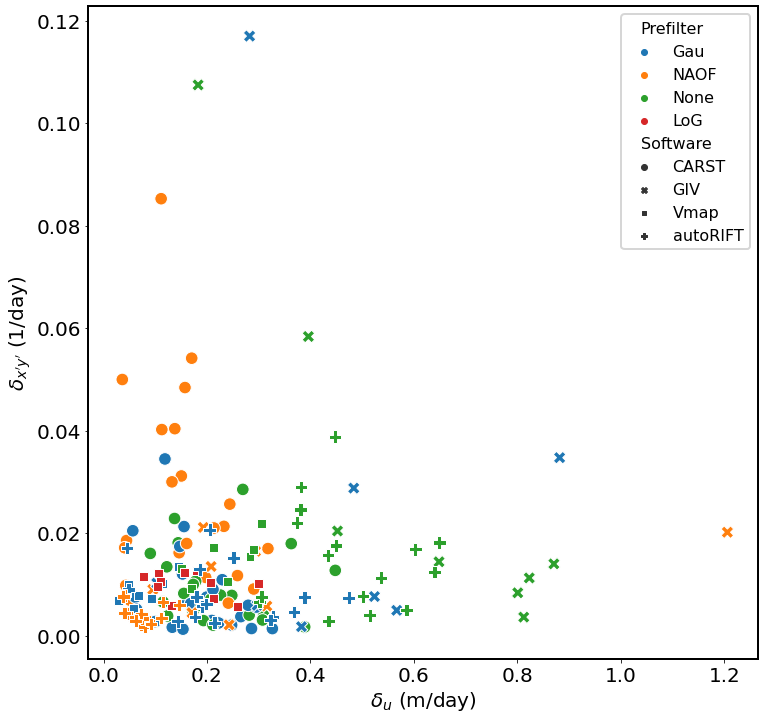
for i in range(4):
demo = df.loc[df['Date'] == datestrs[i]]
fig, ax6 = plt.subplots(1, 1, figsize=(9, 9))
sns.scatterplot(data=demo, x='SAV-uncertainty-x', y='LSR-uncertainty-nm', hue='Prefilter', style='Software', s=160, ax=ax6, legend='full')
ax6.set_xlabel('SAV-x (m/day)')
ax6.set_ylabel('LSR-nm (1/day)')
# ax6.set_xlim(0, 1.2)
legend = ax6.get_legend()
# legend.set_size(10)
legend.get_frame().set_linewidth(2)
fig.patch.set_facecolor('xkcd:white')
# fig.savefig('OIE-vs-SS_updated.svg')
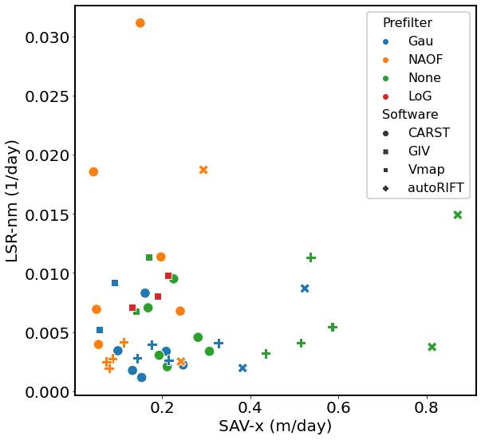
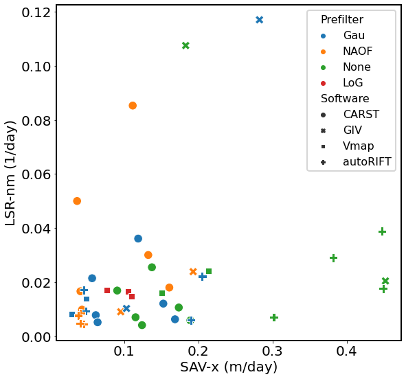
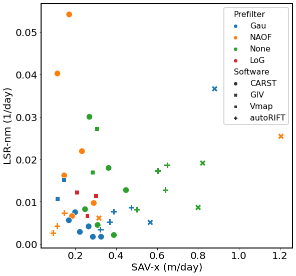
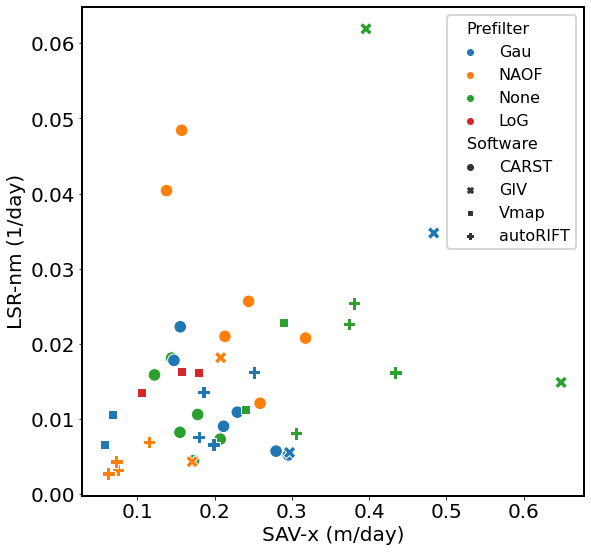
plt.subplots(figsize=(7, 7))
sns.scatterplot(data=demo, x='SAV-uncertainty-x', y='SAV-outlier-percent', hue='Software', style='large_velodiff')
<AxesSubplot:xlabel='SAV-uncertainty-x', ylabel='SAV-outlier-percent'>
plt.subplots(figsize=(7, 7))
sns.scatterplot(data=demo, x='SAV-uncertainty-x', y='SAV-outlier-percent', style='large_velodiff', hue='Pixel spacing (m)')
<AxesSubplot:xlabel='SAV-uncertainty-x', ylabel='SAV-outlier-percent'>
plt.subplots(figsize=(7, 7))
sns.scatterplot(data=demo, x='SAV-uncertainty-x', y='LSR-uncertainty-sh', style='Software', hue='large_velodiff')
<AxesSubplot:xlabel='SAV-uncertainty-x', ylabel='LSR-uncertainty-sh'>
plt.subplots(figsize=(7, 7))
sns.scatterplot(data=demo, x='LSR-uncertainty-sh', y='pt0_velodiff', hue='large_velodiff')
<AxesSubplot:xlabel='LSR-uncertainty-sh', ylabel='pt0_velodiff'>
plt.subplots(figsize=(7, 7))
sns.scatterplot(data=demo, x='SAV-uncertainty-x', y='pt0_velodiff', hue='large_velodiff')
<AxesSubplot:xlabel='SAV-uncertainty-x', ylabel='pt0_velodiff'>
plt.subplots(figsize=(7, 7))
sns.scatterplot(data=demo, x='SAV-outlier-percent', y='pt0_velodiff', hue='large_velodiff', size='large_velomag')
<AxesSubplot:xlabel='SAV-outlier-percent', ylabel='pt0_velodiff'>
plt.subplots(figsize=(7, 7))
sns.scatterplot(data=demo, x='LSR-uncertainty-nm', y='pt0_velodiff', hue='larger_u')
<AxesSubplot:xlabel='LSR-uncertainty-nm', ylabel='pt0_velodiff'>
plt.subplots(figsize=(7, 7))
sns.scatterplot(data=demo, x='SAV-outlier-percent', y='pt0_velodiff', hue='larger_u')
<AxesSubplot:xlabel='SAV-outlier-percent', ylabel='pt0_velodiff'>
fig, axs = plt.subplots(1, 2, figsize=(16, 7))
sns.scatterplot(data=demo, x='larger_u', y='LSR-uncertainty-sh', hue='large_velodiff', ax=axs[0])
sns.scatterplot(data=demo, x='larger_u', y='LSR-uncertainty-sh', hue='SAV-outlier-percent', ax=axs[1])
<AxesSubplot:xlabel='larger_u', ylabel='LSR-uncertainty-sh'>
fig, axs = plt.subplots(1, 2, figsize=(16, 7))
sns.scatterplot(data=demo, x='larger_u', y='LSR-uncertainty-sh', hue='Invalid-pixel-percent', ax=axs[0])
# axs[0].set_ylim(0, 0.02)
sns.scatterplot(data=demo, x='larger_u', y='LSR-uncertainty-sh', hue='large_velomag', ax=axs[1])
# axs[1].set_ylim(0, 0.02)
<AxesSubplot:xlabel='larger_u', ylabel='LSR-uncertainty-sh'>
fig, axs = plt.subplots(1, 2, figsize=(16, 7))
sns.scatterplot(data=demo, x='larger_u', y='LSR-uncertainty-sh', hue='large_velodiff', ax=axs[0])
axs[0].set_ylim(0, 0.02)
sns.scatterplot(data=demo, x='larger_u', y='LSR-uncertainty-sh', hue='SAV-outlier-percent', ax=axs[1])
axs[1].set_ylim(0, 0.02)
(0.0, 0.02)
fig, axs = plt.subplots(1, 2, figsize=(16, 7))
sns.scatterplot(data=demo, x='larger_u', y='LSR-uncertainty-sh', hue='Invalid-pixel-percent', ax=axs[0])
axs[0].set_ylim(0, 0.02)
sns.scatterplot(data=demo, x='larger_u', y='LSR-uncertainty-sh', hue='large_velomag', ax=axs[1])
axs[1].set_ylim(0, 0.02)
(0.0, 0.02)
for i in range(4):
demo = df.loc[df['Date'] == datestrs[i]]
fig, ax6 = plt.subplots(1, 1, figsize=(9, 9))
sns.scatterplot(data=demo, x='SAV-uncertainty-x', y='Invalid-pixel-percent', hue='Prefilter', style='Software', s=160, ax=ax6, legend='full')
ax6.set_xlabel('SAV-x (m/day)')
ax6.set_ylabel('Invalid-pixel-percent')
# ax6.set_xlim(0, 1.2)
legend = ax6.get_legend()
# legend.set_size(10)
legend.get_frame().set_linewidth(2)
fig.patch.set_facecolor('xkcd:white')
# fig.savefig('OIE-vs-SS_updated.svg')
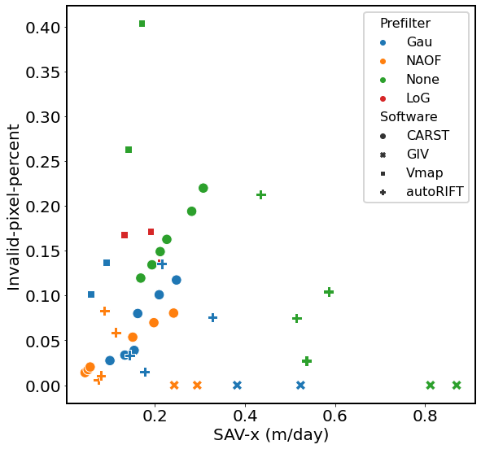
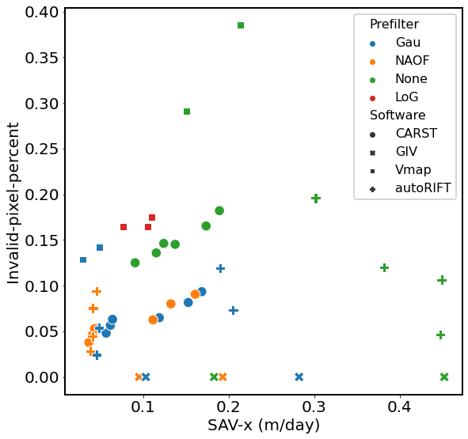
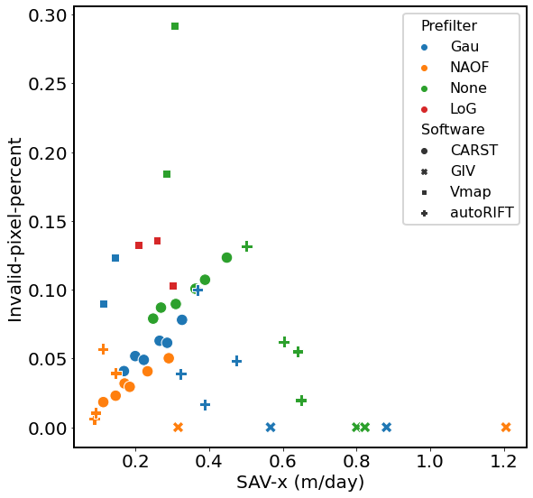
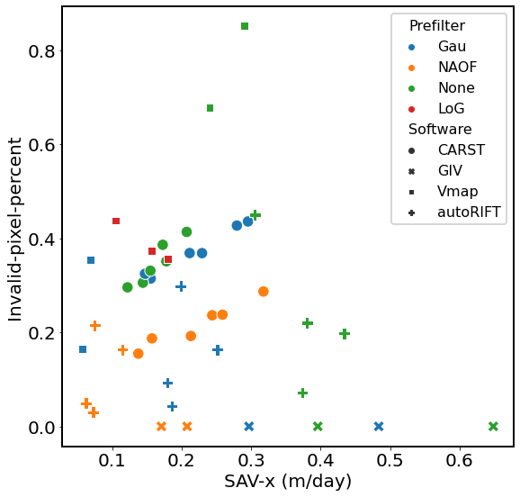
tmp = df.sort_values(by='larger_u')
tmp.iloc[:10]
| Date | Duration (days) | Template size (px) | Template size (m) | Pixel spacing (px) | Pixel spacing (m) | Prefilter | Subpixel | Software | Vx | ... | LSR-uncertainty-nm | LSR-uncertainty-sh | pt0_velodiff | pt1_velodiff | pt2_velodiff | SAV-outlier-percent | Invalid-pixel-percent | larger_u | large_velodiff | large_velomag | |
|---|---|---|---|---|---|---|---|---|---|---|---|---|---|---|---|---|---|---|---|---|---|
| 64 | LS8-20180802-20180818 | 16 | 64 | 960.0 | 1 | 15.0 | NAOF | 16-node oversampling | CARST | /home/jovyan/Projects/PX_comparison/PX/CARST/2... | ... | 0.049987 | 0.049987 | 0.196769 | -0.098366 | NaN | 8.257912 | 3.782803 | 0.036309 | True | 5.419256 |
| 99 | LS8-20180802-20180818 | 16 | 65 | 975.0 | 1 | 15.0 | Gau | parabolic | Vmap | /home/jovyan/Projects/PX_comparison/PX/Vmap/pa... | ... | 0.008197 | 0.006831 | -0.038561 | 0.770025 | NaN | 28.167143 | 12.864866 | 0.037044 | True | 1.040953 |
| 146 | LS8-20180802-20180818 | 16 | 64 | 960.0 | 4 | 60.0 | NAOF | pyrUP | autoRIFT | /home/jovyan/Projects/PX_comparison/PX/autoRIF... | ... | 0.007645 | 0.007645 | -0.314717 | -0.099321 | NaN | 2.843582 | 2.845308 | 0.037996 | True | 8.282856 |
| 147 | LS8-20180802-20180818 | 16 | 64 | 960.0 | 8 | 120.0 | NAOF | pyrUP | autoRIFT | /home/jovyan/Projects/PX_comparison/PX/autoRIF... | ... | 0.004744 | 0.004456 | -0.311703 | -0.098966 | NaN | 2.948707 | 4.432740 | 0.040478 | True | 7.700483 |
| 67 | LS8-20180802-20180818 | 16 | 64 | 960.0 | 4 | 60.0 | NAOF | 16-node oversampling | CARST | /home/jovyan/Projects/PX_comparison/PX/CARST/2... | ... | 0.016606 | 0.017160 | 0.194248 | -0.099527 | NaN | 17.585616 | 4.697983 | 0.040864 | True | 4.753569 |
| 144 | LS8-20180802-20180818 | 16 | 32 | 480.0 | 4 | 60.0 | NAOF | pyrUP | autoRIFT | /home/jovyan/Projects/PX_comparison/PX/autoRIF... | ... | 0.008582 | 0.007867 | -0.365640 | 0.010075 | NaN | 11.603750 | 7.536194 | 0.041101 | True | 8.896059 |
| 70 | LS8-20180802-20180818 | 16 | 64 | 960.0 | 8 | 120.0 | NAOF | 16-node oversampling | CARST | /home/jovyan/Projects/PX_comparison/PX/CARST/2... | ... | 0.009804 | 0.009804 | -0.003792 | -0.058469 | NaN | 8.503429 | 5.292653 | 0.042922 | False | 0.088337 |
| 145 | LS8-20180802-20180818 | 16 | 32 | 480.0 | 8 | 120.0 | NAOF | pyrUP | autoRIFT | /home/jovyan/Projects/PX_comparison/PX/autoRIF... | ... | 0.004525 | 0.004384 | -0.312391 | 0.009076 | NaN | 11.670934 | 9.394275 | 0.045204 | True | 6.910618 |
| 98 | LS8-20180802-20180818 | 16 | 31 | 465.0 | 1 | 15.0 | Gau | parabolic | Vmap | /home/jovyan/Projects/PX_comparison/PX/Vmap/pa... | ... | 0.013875 | 0.009910 | -0.540826 | 0.312534 | NaN | 31.126721 | 14.199565 | 0.050199 | True | 10.773559 |
| 28 | LS8-20180304-20180405 | 32 | 64 | 960.0 | 1 | 15.0 | NAOF | 16-node oversampling | CARST | /home/jovyan/Projects/PX_comparison/PX/CARST/2... | ... | 0.018563 | 0.018563 | 0.312732 | -0.056477 | NaN | 7.070873 | 1.400978 | 0.052115 | True | 6.000780 |
10 rows × 25 columns
plt.subplots(figsize=(7, 7))
sns.scatterplot(data=demo, x='SAV-uncertainty-x', y='Invalid-pixel-percent', hue='Prefilter', style='Software')
<AxesSubplot:xlabel='SAV-uncertainty-x', ylabel='Invalid-pixel-percent'>
fig, axs = plt.subplots(3, 3, figsize=(21, 21))
sns.scatterplot(data=demo, x='SAV-uncertainty-x', y='LSR-uncertainty-sh', hue='Invalid-pixel-percent', ax=axs[0, 0])
# axs[0].set_ylim(0, 0.02)
sns.scatterplot(data=demo, x='SAV-uncertainty-x', y='LSR-uncertainty-sh', hue='SAV-outlier-percent', ax=axs[0, 1])
# axs[1].set_ylim(0, 0.02)
sns.scatterplot(data=demo, x='SAV-uncertainty-x', y='LSR-uncertainty-sh', hue='large_velodiff', ax=axs[0, 2])
sns.scatterplot(data=demo, x='SAV-uncertainty-x', y='LSR-uncertainty-sh', hue='Pixel spacing (m)', s=70, ax=axs[1, 0])
sns.scatterplot(data=demo, x='SAV-uncertainty-x', y='LSR-uncertainty-sh', hue='Prefilter', s=70, ax=axs[1, 1])
sns.scatterplot(data=demo, x='SAV-uncertainty-x', y='LSR-uncertainty-sh', hue='Template size (m)', s=70, ax=axs[1, 2])
sns.scatterplot(data=demo, x='SAV-uncertainty-x', y='LSR-uncertainty-sh', hue='Subpixel', s=50, ax=axs[2, 0])
sns.scatterplot(data=demo, x='SAV-uncertainty-x', y='LSR-uncertainty-sh', hue='Software', s=50, ax=axs[2, 1])
sns.scatterplot(data=demo, x='SAV-uncertainty-x', y='LSR-uncertainty-sh', hue='Prefilter', style='Software', s=50, ax=axs[2, 2])
fig.patch.set_facecolor('xkcd:white')
fig.savefig('Fig4-tmp.png', dpi=300)
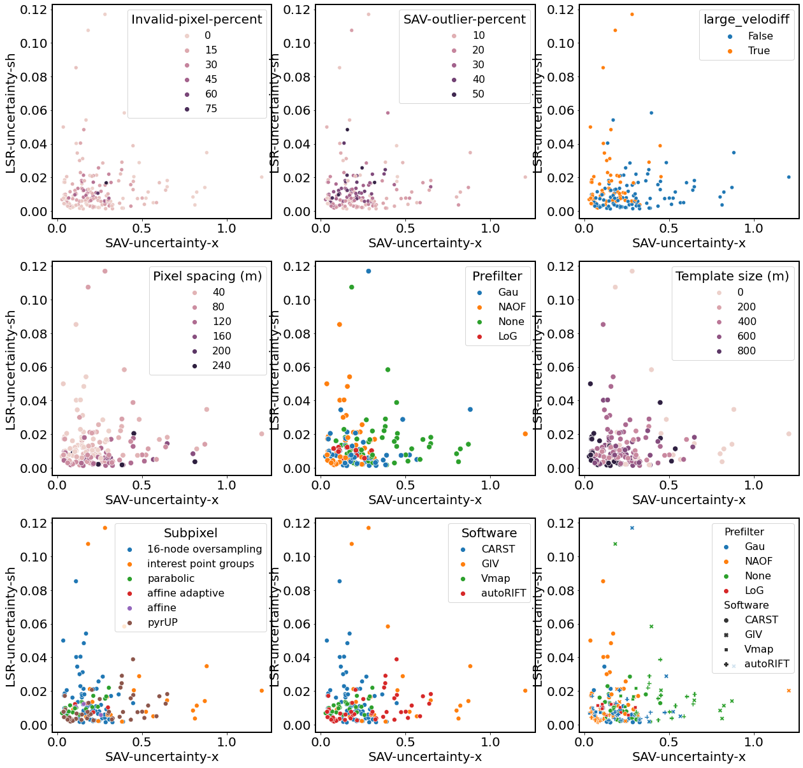